HDR
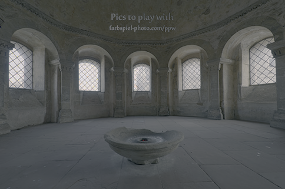
Concept:
Here is an example of High Dynamic Range photography (using a photoset found online). This artifact is generated by first computing the relationship between the actual light in the scene and the pixel values produced by the camera. Then, each pixel location's average radiance from the image stack is used to create a new image in which the over- and under-exposed sections are both plainly visible. A potentially undesirable result of this process is the softening of all light/color due to the averaging.
Credits:
Photo source: "HDR Pics to Play With"
OpenCV
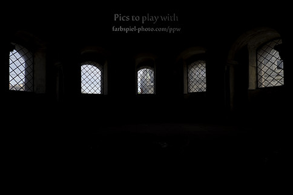
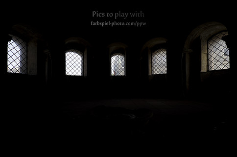
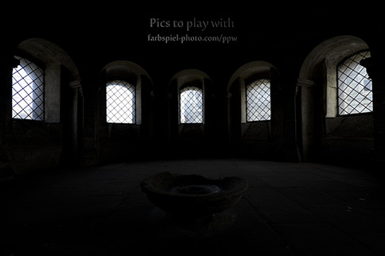
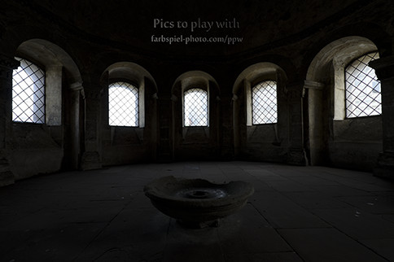
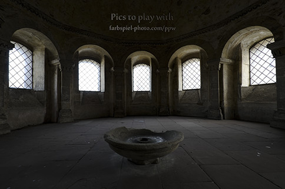
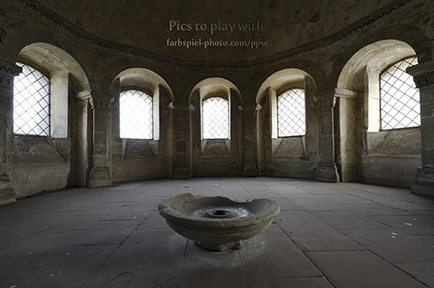
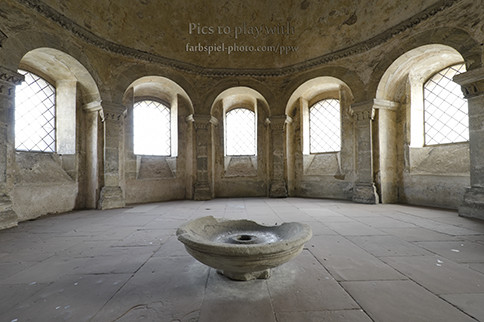
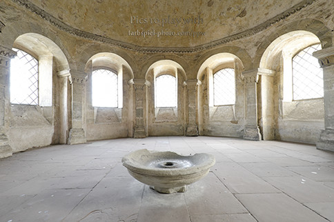
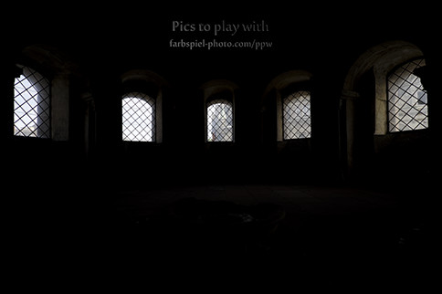
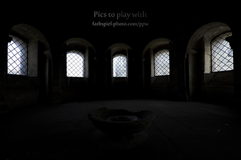
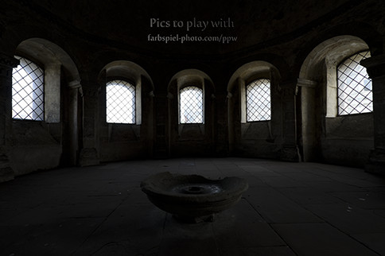
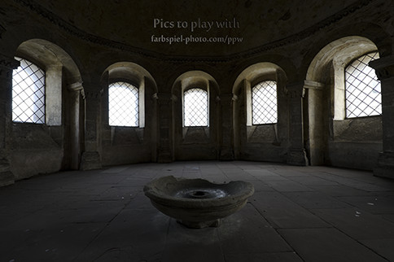
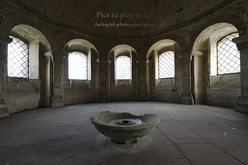
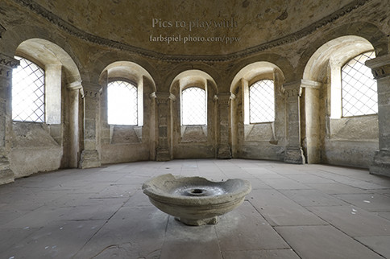
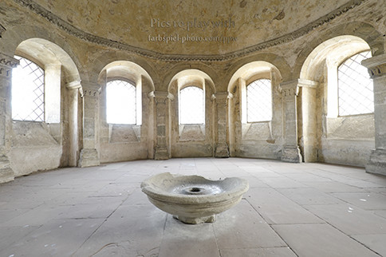